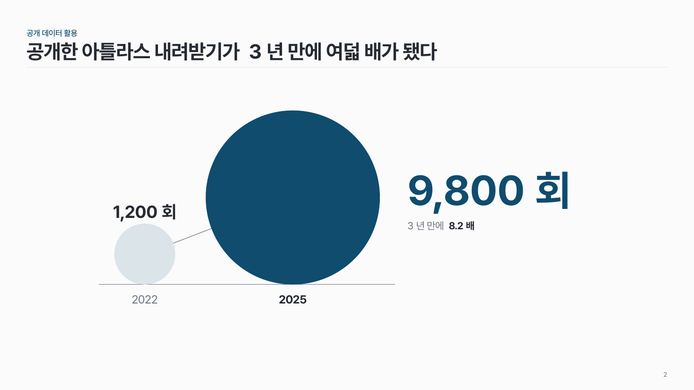
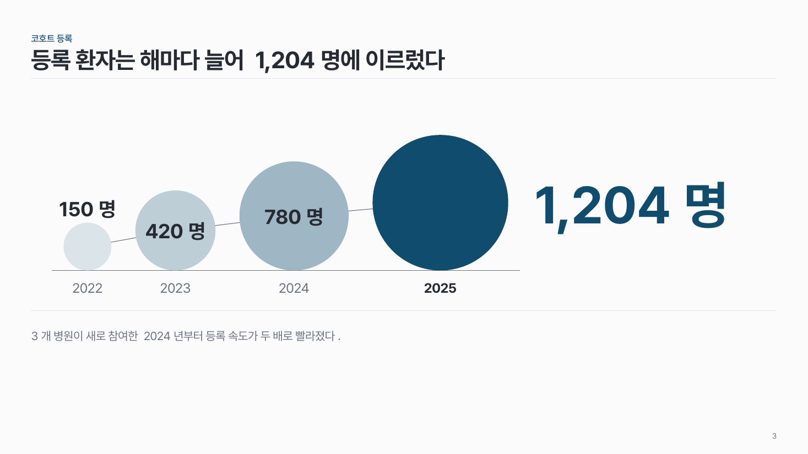

증가 원 data-06
같은 지표를 시점마다 원 면적으로. 원끼리 가는 선으로 잇고, 마지막 값을 오른쪽에 크게.

이 시안
3개 시점 · 증가율 한 줄 + 결론 줄
슬라이드 제목: 연구실 단일세포 데이터가 2년 만에 일곱 배로 늘었다
언제 쓰나
데이터가 2년 만에 7배가 됐다, 등록 환자가 해마다 늘었다처럼 하나의 수치가 크게 늘었다는 메시지일 때요.
구성
- 바닥선 위에 시점 순서대로 원 2–4개, 면적은 값에 비례.
- 원 아래 시점, 원 안이나 위에 값.
- 원끼리 가는 선 하나로 이어요.
- 마지막 원은 주조색, 그 값은 오른쪽에 크게 + 한 줄 ("2023년 대비 7배").
지킬 것
- 면적 비례 (지름 비례는 차이를 과장해요).
- 앞 원은 오래될수록 옅게.
하지 말 것
- 원 사이를 화살표로 잇지 않아요.
- 원마다 다른 색을 쓰지 않아요.
더 볼 게시물 Instagram @peedori_
시안 비교
같은 내용을 옵션만 바꿔 그렸어요. 그림을 누르면 크게 보여요.
A3개 시점 · 증가율 한 줄 + 결론 줄
슬라이드 제목: 연구실 단일세포 데이터가 2년 만에 일곱 배로 늘었다

B2개 시점 · 이전 → 현재
슬라이드 제목: 공개한 아틀라스 내려받기가 3년 만에 여덟 배가 됐다

C4개 시점 · 공통 단위
슬라이드 제목: 등록 환자는 해마다 늘어 1,204명에 이르렀다